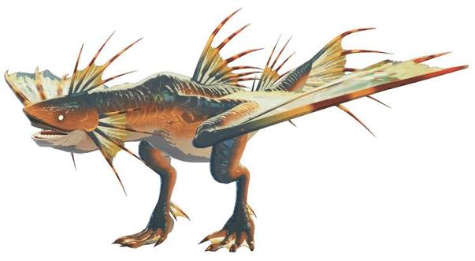
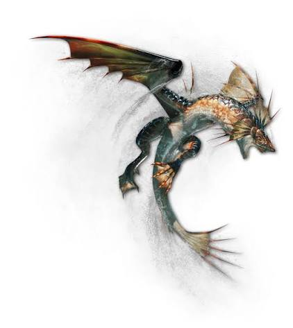
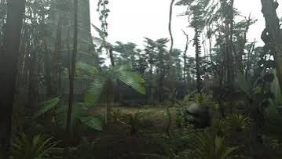
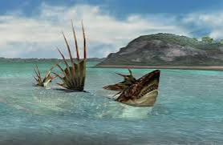
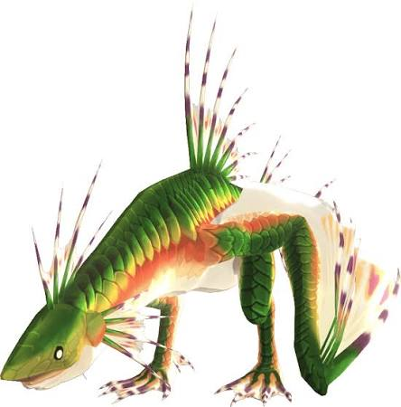
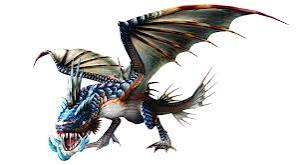
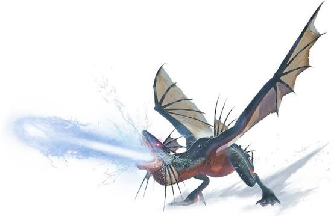

This Hideous Fellow with big hips is a Plesioth form the Monster Hunter series of games, a series of games where you fight insanely large monsters with insanely strong weapons. This piscine (fish-like) wyvern is MASSIVE, coming in at whopping 85.3 feet (or 28 meters). It's favourite snack are frogs.

It lives in large bodies of water nearly everywhere, but it appears often in desserts and jungles. Its green sub-species has occasionally been found in springs near volcanos.

This Creature is a fish, and like what all fishies can do, it can swim in the water. While in the water it's hearing is improved, however, any loud noises will startle it, causing it to come on to land to see what it is (hunters will often throw sonic bombs at it to get it out of the water). Just because it's a sea creature doesn't mean that it's defenceless on the land, and it has plenty of anti-hunter techniques. This thing can spin around, usually hitting hunters with it's tail in the process. It's bite contains a special saliva that put hunters to sleep on contact (personally from experience this is very infuriating). It can fire all the water in it's mouth to form a small, but devastating water blast, it can also perform this while in the water. It's most notorious attack is it's hipcheck (more specifically the attack's hitboxes), a move so infamous the creators themselves referenced the disdain of it in one of their games. Whenever it does a hipcheck, Plesioth converts it's entire body, as well as the area around it, into a giant hitbox. You can see why this is a bad thing. This abomination also has a few variants to it's name.

It's the same thing but green. It was introduced in Monster Hunter G.

A ludicrously strong Blue varient who's body produces green gel-like substances that can entrap and subdue its prey. It's roars are loud enough to cause hunters to flinch cover their ears in pain (provided they aren't wearing high quality earplugs). It can also hipcheck twice in once attack. It was introduced in Monster Hunter Frontier Z.

A navy-blue sub-species that is covered in barnacle like protrusions, these protrusions store massive amounts of water, which it can use to either coat itself in armour or supercharge it's water blast attack. It has a glaring weakness to fire. Introduced in Monster Hunter Stories 3.
It has appeared in many Monster Hunter games, including (but not limited to):